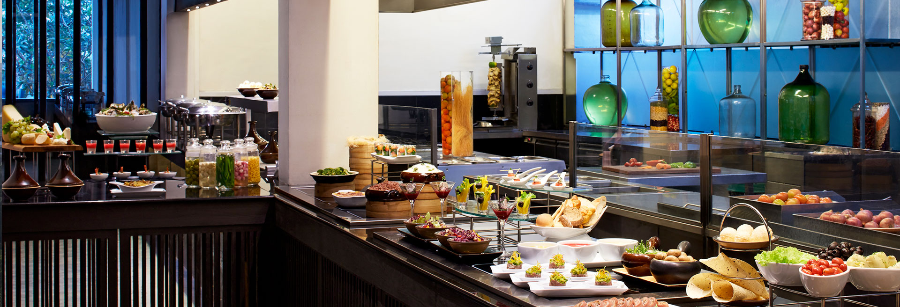
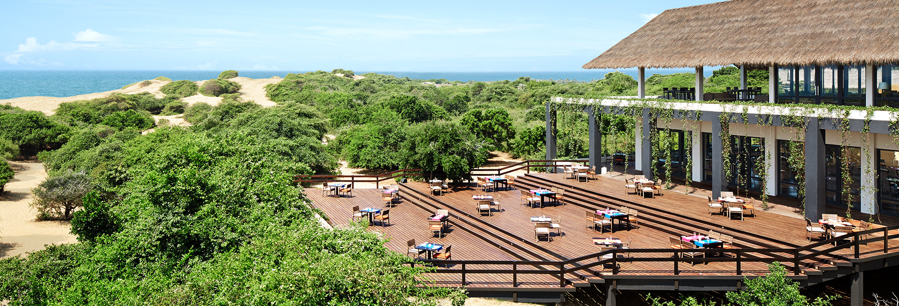

DINING
Dining at Jetwing hotels
As a family in Sri Lanka, dining experiences are always a pleasure to remember. From the warmth of a rustic dining table to the comfort of our natural wonders, our founder, the late Herbert Cooray, ensured these wondrous specialties of local hospitality remain with us for the rest of time. Our humble beginnings on the lively fishing coast of Negombo saw sunrise visits to the Lellama for the freshest catch of the day as a routine. Since then, our routine has transcended into a tradition that we still practice to date. Such values extend to each of our dining experiences, where the unique environments at each property have inspired every dining option available at Jetwing Hotels across Sri Lanka. From dining under the stars on a private beach, to tasting ancient recipes in the midst of historic civilisations, your culinary experience at the home of Sri Lankan hospitality is one we look forward to sharing with you. Because when you indulge in our palate with a legacy from all walks of life, your taste buds are bound to remember it for a lifetime. And as a stimulating pick-me-up to accompany your meal, you also have the option of selecting fine wines from our exclusive cellars, or sipping tropical cocktails inspired by the exotic locations that surround us. Should you wish, signature experiences among our spaces can also be arranged upon request – anything from the simple comforts of room service to the lavish pleasures of a private terrace in our exclusive environments. Each of our properties feature unique dining options that fit seamlessly into the splendour of our homes – made for all tastes, served with the finest of Sri Lankan hospitality, ready to welcome you at any time.
WELLNESS
Wellness at Jetwing hotels
.jpg)
Our island is a world of its own. And while you may venture to our world to get lost in its beauty, our wellness sanctuaries offer a relaxing opportunity to escape it momentarily. At our spa hotels, Sri Lanka becomes the ideal respite for rest and relaxation. Inspired by the ancient practice of Ayurveda, our world-class experiences draw from centuries of tradition to indulge you in sublime pampering amidst some of the most beautiful settings in Sri Lanka. Contemporary in our spaces, yet traditional in our customs, spas at Jetwing hotels and villas are designed for you to sink into the warmth of our care – either for an entire holiday experience, or even just a transient sensation of divine bliss. For your mind, body and soul, we feature specialised facilities including wet areas, steam rooms, plunge pools, as well as massage and treatment rooms designed around the philosophies of your well-being. In addition to our treasured spaces of tranquility, many of our properties also feature fully equipped fitness centres to serve your active lifestyle, wherever you may find yourself in Sri Lanka. Fitted with the latest equipment and modern facilities, each of our gyms has been designed to harness your energy for optimal performance, while still indulging in your island holiday experience. A selection of hotels and villas in our family also offer the luxury of a pool, and even tennis courts for added pleasure. Should you decide to take a refreshing dip under our tropical sun, or pick up a racquet for some holiday fun, we will be more than happy to accommodate your active lifestyle. Finally, if you wish to take your wellness experience beyond our premises, look no further than our versatile surroundings across Sri Lanka, which are always ready to design a natural fitness experience like no other – be it along the sandy shores of our pristine beaches, in the morning mist of our central highlands, or even through the quiet trails of our homely forests.
SUSTAINABILITY
Sustainability at Jetwing hotels
As a thriving tropical island, we are fortunate to have an array of natural resources that surround us wherever we are. Alongside their enchantment as a source of inspiration for our hospitality, many of these resources also play an integral role in hotel operations. The growth of tourism in Sri Lanka has seen an increased demand of resources, and in turn highlighted the importance of preserving the environments we call home. Our family remains committed to the optimization of resources across all properties, where every effort is made to reduce consumption and increase reusability in the spirit of sustainable hospitality.

.jpg)

.png)